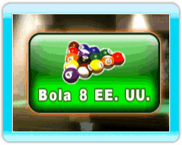
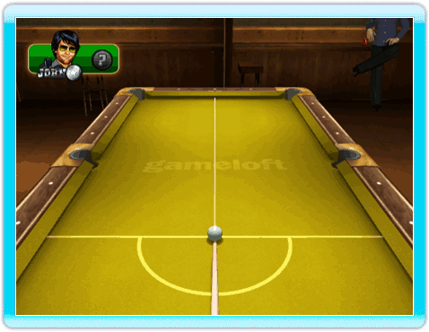
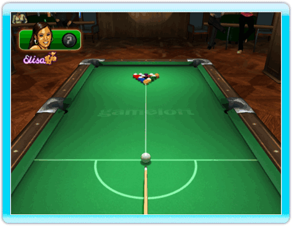
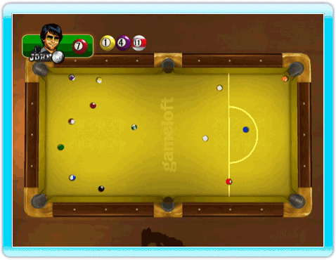

23 |
Reglas Bola 8 EE. UU. |
 |
 Un jugador debe embocar las bolas numeradas del 1 al 7 (lisas) y el otro jugador las numeradas del 9 al 15 (rayadas). El jugador que emboque legalmente la bola 8 tras haber embocado las bolas de su grupo, gana la partida. Orden de salida Para determinar quién rompe, cada jugador realiza un tiro hacia la banda del superior y la bola blanca debe volver a la banda inferior. El jugador cuya bola quede más cerca de la banda inferior rompe. A esto se le llama ORDEN DE SALIDA. Se permite que la bola golpee la banda al volver aunque no es requerido. Saque legal Para realizar un saque legal, debe embocarse una bola o deben tocar la banda al menos cuatro bolas numeradas. Si el saque no es legal, se produce falta. Las bolas vuelven a colocarse y le toca sacar al siguiente jugador Si se emboca la bola blanca en un saque legal, se produce falta. Todas las bolas embocadas se quedan en la tronera (excepto la bola 8). La mesa estará entonces "abierta". Si se emboca la bola 8 en el saque, se vuelven a colocar las bolas y le toca sacar al siguiente jugador. Si un jugador emboca la bola 8 no pierde la partida. Mesa abierta La mesa está "abierta" cuando todavía no se ha decidido la elección de las bolas (rayadas o lisas). Se considera legal tirar a una lisa y meter una rayada, y viceversa. Pero si la bola 8 es la primera con la que se hace contacto, se considera falta. A excepción del saque y cuando la mesa está abierta, los jugadores siempre tienen que tocar primero una bola de su grupo y meter una bola numerada o hacer que la blanca u otra bola toque una de las bandas.Bola blanca en mano El jugador puede colocar la bola en cualquier parte de la mesa. |
 |
 |
 |